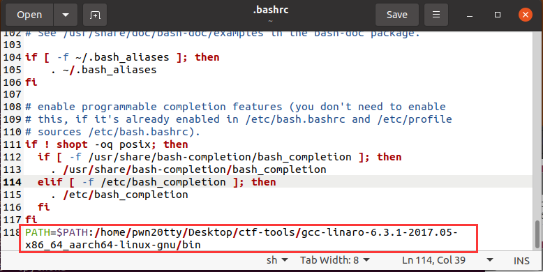

ARMpwn基础环境搭建
QEMU
选择源码安装
先安装一些依赖
$ sudo apt-get install ninja-build
$ sudo apt-get install build-essential zlib1g-dev pkg-config libglib2.0-dev
$ sudo apt-get install libmount-dev
$ sudo apt-get install libpixman-1-dev
解压，编译安装
$ tar xvJF qemu-6.0.0.tar.xz
#文件夹改个名字
$ mv qemu-6.0.0 qemu
#创建一个临时文件夹
$ mkdir build
$ cd build
$ ../qemu/configure
$ make; make install
验证
pwn20tty@ubuntu:~/Desktop/ctf-tools$ qemu-riscv64 --version
qemu-riscv64 version 6.0.0
Copyright (c) 2003-2021 Fabrice Bellard and the QEMU Project developers
交叉编译工具
# 下载资源
$ wget http://releases.linaro.org/components/toolchain/binaries/6.3-2017.05/aarch64-linux-gnu/gcc-linaro-6.3.1-2017.05-x86_64_aarch64-linux-gnu.tar.xz
# 解压
$ tar -xvf gcc-linaro-6.3.1-2017.05-x86_64_aarch64-linux-gnu.tar.xz
写入环境变量
$ gedit ~/.bashrc
在最后一行加上信息
路径为~/gcc-linaro-6.3.1-2017.05-x86_64_aarch64-linux-gnu/bin

环境变量生效
$ source ~/.bashrc
编译运行一个arm程序
a.c
#include<stdio.h>
int main(){
printf("hello world!\n");
return 0;
}
编译 (可以加上-static参数进行静态编译)
$ aarch64-linux-gnu-gcc -o out a.c
假如是动态链接，则需要将运行库文件夹拷贝到当前目录（也可以直接加上-L参数指定动态链接库文件夹）
注：交叉编译工具里有动态运行库文件夹
$ cp -r ~/Desktop/ctf-tools/gcc-linaro-6.3.1-2017.05-x86_64_aarch64-linux-gnu/aarch64-linux-gnu/libc/lib ./
运行
$ qemu-aarch64 -L . ./out
或者直接-L参数写上lib路径，这样就不用拷贝，不过调试的时候需要手动加载了，要不然符号信息可能不能加载。
$ qemu-aarch64 -L /home/pwn20tty/Desktop/ctf-tools/gcc-linaro-6.3.1-2017.05-x86_64_aarch64-linux-gnu/aarch64-linux-gnu/libc ./out
调试arm程序
安装能够调试多架构的gdb
$ sudo apt-get install gdb-multiarch
先启动程序开启监听
$ qemu-aarch64 -L . -g 1234 out
调试
$ gdb-multiarch out
pwndbg> target remote :1234
之后调试就和正常x86/x64一样啦，并且符号表信息成功加载